PHẦN 1: KHẮC PHỤC ĐIỂM YẾU FOREHAND & BACKHAND
— Paul Metzler (Tennis Weaknesses & Remedies)
Lời Mở Đầu: Chẩn Đoán Những Mắt Xích Kìm Hãm Tiềm Năng
Phần lớn người chơi phong trào và bán chuyên thường chấp nhận sống chung với điểm yếu. Người thì sợ cú trái tay (backhand), người thì run rẩy mỗi khi giao bóng hai, người lại bất lực khi bị đối thủ kéo lên lưới đánh volley. Khi bước vào một trận đấu căng thẳng, đối thủ thông minh sẽ nhanh chóng phát hiện ra mắt xích yếu nhất này và liên tục khoét sâu vào đó cho đến khi bạn sụp đổ.
Tuy nhiên, trong quần vợt, không có điểm yếu nào là "bẩm sinh" hay không thể sửa đổi. Mọi cú đánh hỏng lặp đi lặp lại đều bắt nguồn từ một lỗi sai cơ học căn bản: có thể là do tay cầm vợt không phù hợp với tầm đón bóng, cổ tay bị lỏng lẻo ở thời Điểm tiếp xúc bóng, hoặc bộ chân không tạo được nền tảng vững chắc để chuyển trọng tâm. Khi bạn hiểu rõ nguyên nhân gốc rễ, việc khắc phục sẽ trở nên vô cùng rõ ràng và có phương pháp.
Chương 1: Tay Cầm Vợt Forehand (The Forehand Grip)
Trong quá khứ, nhiều huấn luyện viên thường nói rằng "bất kỳ kiểu cầm vợt nào tạo cảm giác thoải mái đều là đúng." Quan điểm này đã lỗi thời và gây ra vô số hiểu lầm tai hại. Cầm vợt thoải mái khi đứng yên không có nghĩa là nó sẽ hoạt động hiệu quả khi bạn phải đối mặt với một đường bóng xoáy nặng và tốc độ cao.
Lý do cốt lõi khiến các tay vợt sử dụng các kiểu grip khác nhau là: mỗi kiểu grip quy định một điểm tiếp xúc bóng tự nhiên khác nhau trong tương quan với cơ thể. Hãy cầm vợt lên và đứng nghiêng người so với lưới (vai trái hướng về phía lưới đối với người thuận tay phải):
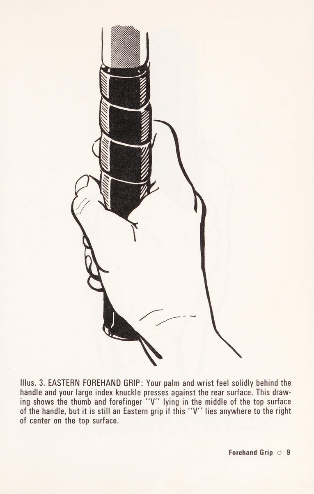
1. Kiểu Cầm Western Forehand (Cầm Vợt Phương Tây)
Lòng bàn tay nằm chủ yếu bên dưới cán vợt và cổ tay nằm phía sau. Chữ "V" tạo bởi ngón cái và ngón trỏ nằm trên vát chéo phía trên bên phải hoặc thậm chí áp sát vào mặt đáy. Kiểu cầm này đòi hỏi bạn phải đón bóng ở vị trí rất xa về phía trước (cách hông trái từ 30 đến 45 cm) và ở tầm bóng ngang ngực. Điểm yếu chết người của Western grip là cực kỳ lúng túng khi xử lý các đường bóng thấp, bóng slice sát mặt đất hoặc bóng ngắn lướt nhanh.
2. Kiểu Cầm Extreme Eastern Forehand
Khớp gốc ngón trỏ nằm ở vát chéo phía dưới, mang lại độ bám vững chắc để tạo xoáy topspin mạnh mẽ trong khi vẫn cho phép xử lý các đường bóng tầm trung một cách thoải mái. Điểm tiếp xúc nằm ở phía trước hông trước khoảng 20-30 cm.
3. Kiểu Cầm Orthodox Eastern Forehand (Eastern Truyền Thống)
Đây là kiểu cầm kinh điển và linh hoạt nhất trong lịch sử quần vợt. Lòng bàn tay nằm trọn vẹn phía sau cán vợt. Mặt vợt vuông góc tự nhiên với đường bay của bóng khi tiếp xúc ở vị trí cách hông trước khoảng 15-20 cm. Điểm mạnh vượt trội của Eastern là sự ổn định cơ học tuyệt đối và khả năng chuyển đổi linh hoạt giữa đánh bóng bạt (flat) và đánh bóng xoáy (topspin).
4. Kiểu Cầm Continental Forehand
Chữ "V" nằm ở đỉnh cán vợt hoặc hơi lệch sang trái. Điểm tiếp xúc tự nhiên nằm ngang hông hoặc hơi lùi về phía sau. Trong quần vợt hiện đại, Continental không còn phù hợp cho các cú đánh cuối sân (groundstrokes) vì không thể tạo đủ topspin để giữ bóng trong sân ở tốc độ cao, nhưng lại là kiểu cầm tối thượng bắt buộc phải dùng cho Serve, Volley và Overhead Smash.
Chương 2: Độ Vững Chắc Của Forehand (Forehand Firmness)
Một trong những căn bệnh phổ biến nhất của người chơi phong trào là "cổ tay lỏng lẻo" (wrist wobble) tại thời Điểm tiếp xúc bóng. Người chơi thường nhầm lẫn giữa việc "thả lỏng cánh tay khi lấy đà" với việc "lỏng cổ tay khi chạm bóng."
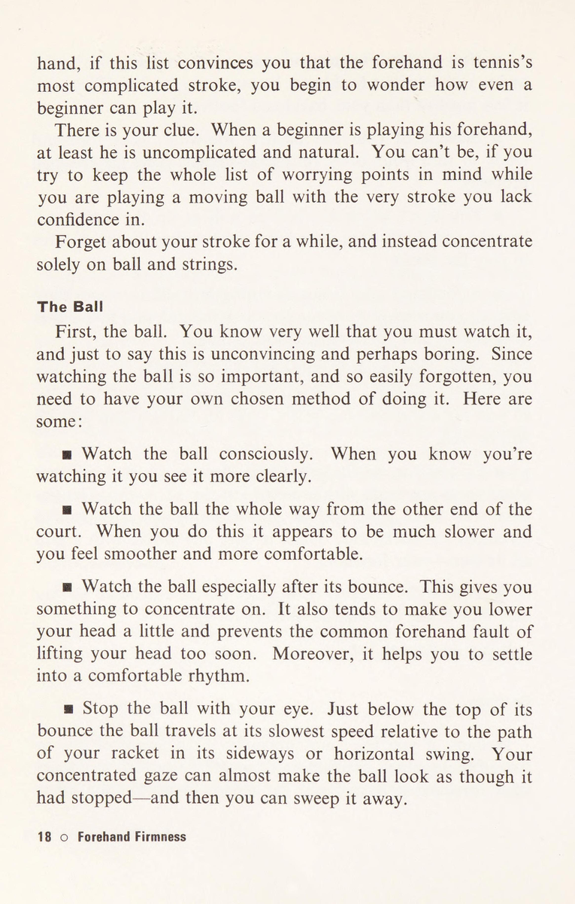
Khi bóng chạm vào mặt lưới với vận tốc lớn, nếu khớp cổ tay không được giữ vững chắc, phản lực từ quả bóng sẽ làm vặn xoắn mặt vợt. Kết quả là đường bóng bay đi thiếu lực, không kiểm soát được phương hướng và người chơi nhanh chóng bị đau khớp cổ tay.
Phương Thuốc Khắc Phục (The Remedies):
- Quy tắc "Cổ tay ngửa ra sau" (Laid-back wrist): Trong suốt quá trình hạ vợt lấy đà, cổ tay phải được giữ ở trạng thái ngửa ra phía sau một cách tự nhiên. Góc ngửa này phải được duy trì cố định xuyên suốt khoảnh khắc tiếp xúc bóng.
- Siết lực đúng thời điểm (Contact Pinch): Cầm vợt lỏng ở mức 3/10 khi chuẩn bị, nhưng siết chặt lên mức 7-8/10 ngay 5 mili-giây trước khi chạm bóng để chống lại xung lực va chạm.
- Đạp chân chuyển trọng tâm: Đừng bao giờ đánh bóng chỉ bằng cánh tay trong khi trọng tâm cơ thể ngả ra sau (falling back). Hãy đảm bảo trọng lượng cơ thể chuyển từ chân sau sang chân trước theo hướng bóng đi.
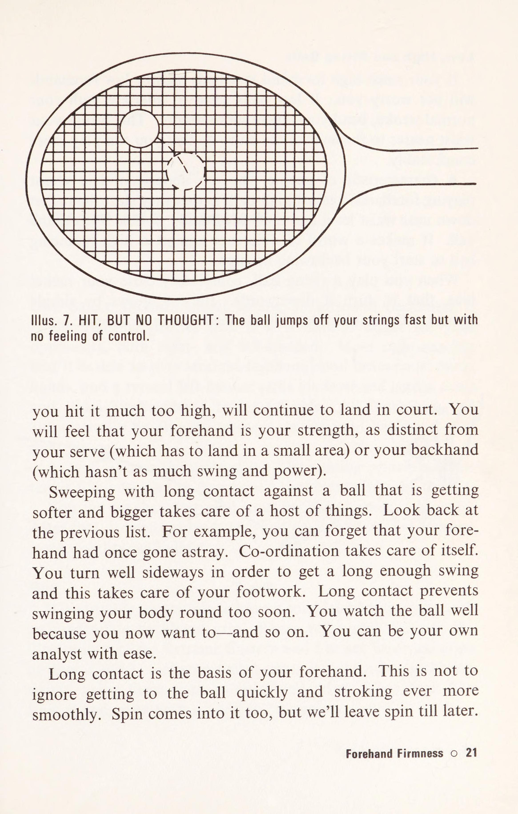
Chương 3: Hoàn Thiện Backhand (Backhand Adequacy)
"Nỗi sợ cú trái tay" là hội chứng tâm lý phổ biến nhất trên sân quần vợt. Nhiều người chơi sẵn sàng chạy vòng quanh cả sân chỉ để né cú backhand và đánh một cú forehand gượng gạo. Hành động này mở toang toàn bộ khoảng sân trống cho đối thủ khai thác.
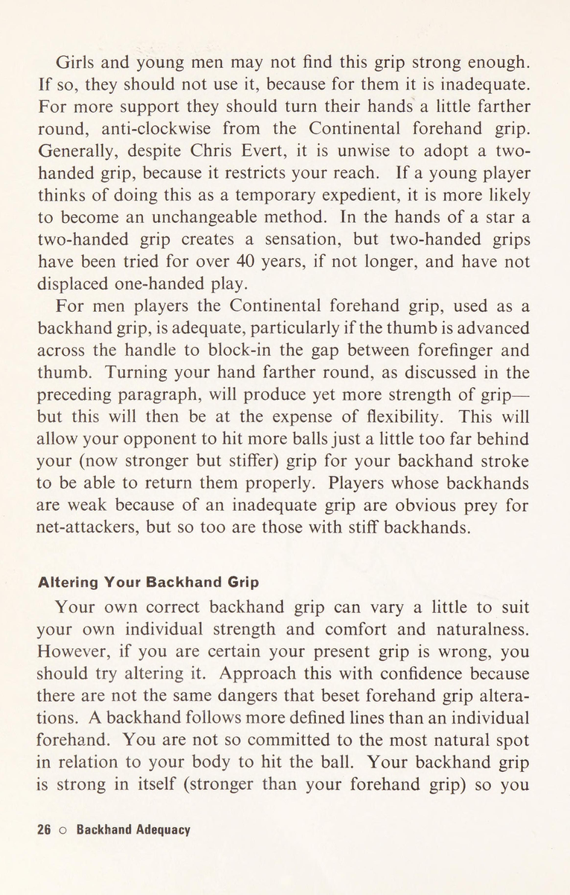
Ba Sai Lầm Cốt Lõi Khiến Cú Backhand Yếu Ớt:
- Không chịu đổi grip từ Forehand sang Backhand: Sử dụng luôn grip forehand để đánh trái tay khiến mặt vợt bị mở ngửa lên trời hoặc cổ tay bị bẻ gập ở tư thế cực kỳ yếu ớt. Bạn bắt buộc phải xoay cán vợt 1/4 vòng về phía bên trái (đối với người thuận tay phải) để đưa khớp ngón trỏ lên đỉnh vát.
- Điểm tiếp xúc bóng quá trễ ngang người: Trong khi cú forehand có thể tha thứ cho việc chạm bóng ngang hông, cú backhand đòi hỏi bạn phải đón bóng ở phía trước hông dẫn từ 20 đến 35 cm. Chạm bóng trễ ở cú backhand đồng nghĩa với việc bóng sẽ rúc lưới hoặc bay bạt ra ngoài hàng rào.
- Mở vai quá sớm: Nhiều tay vợt có thói quen xoay cả ngực về phía lưới trước khi chạm bóng. Đối với cú backhand (đặc biệt là cú trái một tay), vai phải giữ nghiêng vuông góc với lưới cho đến khi bóng rời khỏi mặt vợt hoàn toàn.
PHẦN 2: GIẢI MÃ GIAO BÓNG, LƯỚI & CẬN CHIẾN
— Paul Metzler (Tennis Weaknesses & Remedies)
Chương 4: Triết Lý Giao Bóng (Service Concepts)
Điểm yếu phổ biến nhất trong cú giao bóng của người chơi phong trào là tỷ lệ lỗi giao bóng một quá cao và cú giao bóng hai quá yếu ớt, dễ bị đối thủ tấn công đè bẹp ngay lập tức. Căn bệnh này bắt nguồn từ ba quan niệm sai lầm:
- Đặt quá nhiều kỳ vọng (thậm chí là sự tuyệt vọng) vào cú ăn điểm trực tiếp (Ace): Người chơi thường cố gắng giao bóng sấm sét ở quả thứ nhất với hy vọng ghi điểm ngay. Khi hỏng quả một, họ rơi vào trạng thái hoảng loạn và chỉ dám đẩy nhẹ quả bóng sang sân ở quả thứ hai.
- Không chấp nhận thực tế đường đạn (Ballistics fact): Để một quả bóng bay qua mép lưới cao 91.4 cm và cắm xuống ô giao bóng dài 6.4 m, điểm tiếp xúc bóng của bạn phải đủ cao. Nếu bạn để bóng rơi xuống thấp rồi mới đánh, góc bắn hình học sẽ khiến bóng hoặc rúc thẳng vào lưới, hoặc bay vọt ra ngoài ô giao bóng.
- Tung bóng thất thường (Inconsistent Toss): Quả bóng được tung ở các vị trí khác nhau trong mỗi lần giao, khiến cơ thể phải uốn éo điều chỉnh trong hoảng loạn.
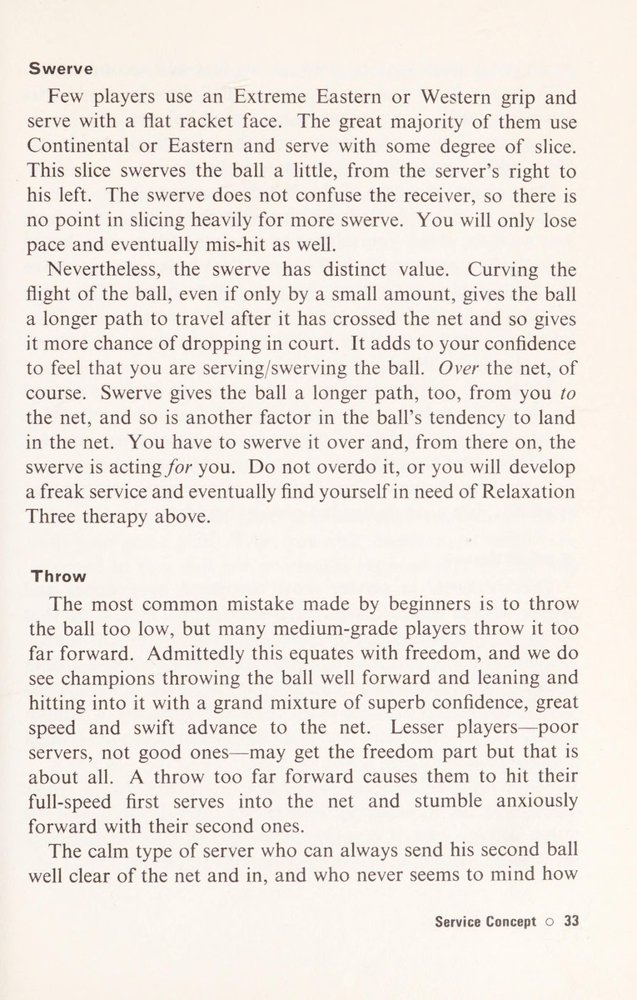
Phương Thuốc Khắc Phục Triệt Để (Service Remedies):
- Thống nhất quỹ đạo tung bóng: Hãy luyện tập tung bóng mà không vung vợt. Đặt một chiếc nắp hộp hoặc một chiếc khăn nhỏ ở vị trí phía trước bàn chân trái khoảng 30 cm và hơi lệch sang phải. Quả bóng tung lên đỉnh phải rơi trúng vào mục tiêu đó khi bạn không đánh.
- Vươn người chạm bóng ở đỉnh cao nhất (Reach for the sky): Đừng bao giờ chờ quả bóng rơi xuống tầm mắt. Hãy vươn toàn bộ cơ thể, kiễng gót chân và đánh vào quả bóng ngay khi nó vừa dừng lại ở điểm cao nhất của quỹ đạo tung bóng.
- Áp dụng Spin vào cú giao bóng hai (Kick / Slice Serve): Loại bỏ hoàn toàn cú giao bóng đẩy bạt cầu may. Hãy dùng grip Continental, chém vợt từ dưới lên trên và từ trái sang phải để tạo xoáy topspin-slice, giúp bóng có độ cong an toàn qua lưới và cắm sâu vào ô giao bóng.
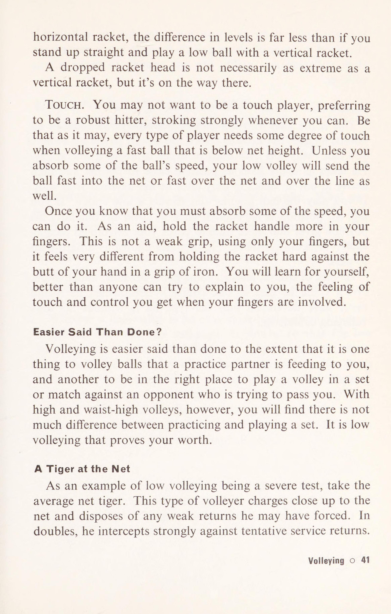
Chương 5: Cú Volley Trên Lưới (Volleying)
Căn bệnh chí tử của hầu hết những người sợ lên lưới là: họ vung vợt lấy đà quá lớn như thể đang đứng ở vạch cuối sân. Ở cự ly cận chiến sát lưới, quả bóng từ đối thủ bay tới với tốc độ chớp nhoáng (chỉ khoảng 0.3 - 0.5 giây). Việc vung vợt ra sau lưng đồng nghĩa với việc bạn sẽ chạm bóng trễ phía sau người và hỏng bóng 100%.
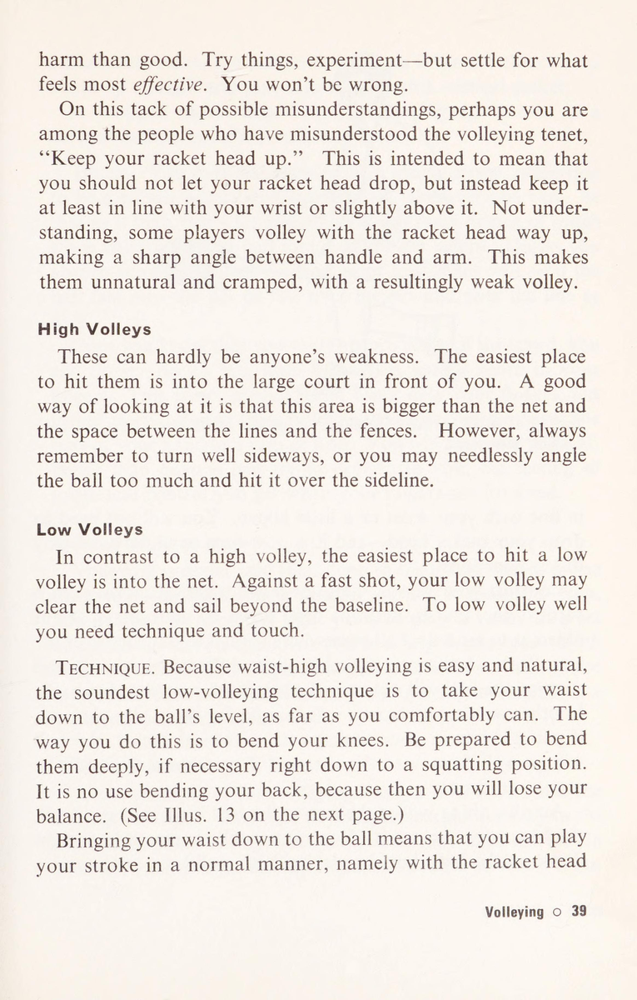
Nguyên Lý "Đẩy Chặn Thay Vì Vung Đập" (Punch, Do Not Swing):
- Mặt vợt luôn nằm trong tầm mắt: Đầu vợt phải luôn nằm cao hơn cổ tay và ở phía trước cơ thể. Khi chuẩn bị đánh volley, bạn chỉ cần xoay vai nghiêng nhẹ, đưa mặt vợt ra đón đường bóng mà không được phép kéo vợt qua khỏi đường thẳng của vai.
- Bước chân tiếp lửa (Step into the ball): Sức mạnh của cú volley không đến từ cánh tay mà đến từ bước chân tiến tới. Đối với cú volley phải tay (forehand volley), hãy bước chân trái chéo lên phía trước đúng thời điểm tiếp xúc để mượn lực phản hồi từ đối thủ.
- Khóa cổ tay tuyệt đối (Solid wrist lock): Cổ tay lỏng lẻo ở trên lưới sẽ khiến mặt vợt bị bẻ gãy khi chạm bóng mạnh. Giữ grip Continental và siết chặt bàn tay cầm vợt tại khoảnh khắc va chạm.
Chương 6: Half-Volley, Lob, Smash & Đối Phó Thuận Tay Trái
Đây là nhóm kỹ năng chuyên biệt nhưng thường xuyên xuất hiện trong các tình huống then chốt định đoạt ván đấu:
1. Kỹ Thuật Half-Volley (Bắt Bóng Nửa Nảy)
Khi bạn đang trên đường tiến lên lưới và đối thủ đánh một đường bóng cắm thẳng vào chân bạn, bạn rơi vào "khu vực tử thần" (No Man's Land). Sai lầm phổ biến là cố gắng vung vợt ngửa lên trời. Giải pháp đúng đắn là hạ thấp hai đầu gối thật sâu, giữ đầu vợt thấp sát mặt đất và thực hiện động tác gạt bóng ngắn gọn ngay khi bóng vừa chạm đất nảy lên trong vòng 5-10 cm.
2. Cú Lob Tấn Công & Phòng Thủ (The Lob)
Người chơi thường chỉ nhớ đến cú lob khi đã bị dồn vào góc cùng quẫn. Hãy biến cú lob thành vũ khí tấn công chủ động: khi đối thủ áp sát lưới quá gần, một cú lob topspin xoáy cuộn bay vượt qua tầm với của họ sẽ rơi cắm vào sân sau và biến thành điểm winner không thể cứu vãn.
3. Cú Đập Bóng Trên Cao (Overhead Smash)
Điểm yếu của cú smash là phán đoán sai điểm rơi và để bóng bay ra sau lưng. Hãy nhớ quy tắc vàng: ngay khi nhận diện cú lob của đối thủ, lập tức xoay nghiêng người sang một bên, chỉ tay trái lên quả bóng trên trời để định vị không gian và lùi bước chân đuổi bóng (side-shuffle). Đừng bao giờ lùi thẳng lưng vì bạn sẽ rất dễ bị mất thăng bằng ngã ngửa.
4. Đối Phó Với Tay Vợt Thuận Tay Trái (Left-Handed Weaknesses)
Tay vợt thuận tay trái (Southpaw) luôn mang lại sự ức chế tâm lý vì quỹ đạo bóng bị đảo ngược hoàn toàn. Cú giao bóng slice của họ sẽ xoáy xé bạn ra ngoài góc backhand bên ô lợi điểm (Ad court). Bí quyết để hóa giải họ là: luôn chủ động đứng lệch nửa bước sang bên trái khi trả giao bóng, và tập trung tấn công dồn dập vào cánh tay phải của họ (cú trái tay yếu hơn) thay vì đánh bóng theo quán tính vào góc phải thông thường.
PHẦN 3: KHOA HỌC XOÁY BÓNG & NGHỆ THUẬT ĐỌC ĐỐI THỦ
— Paul Metzler (Tennis Weaknesses & Remedies)
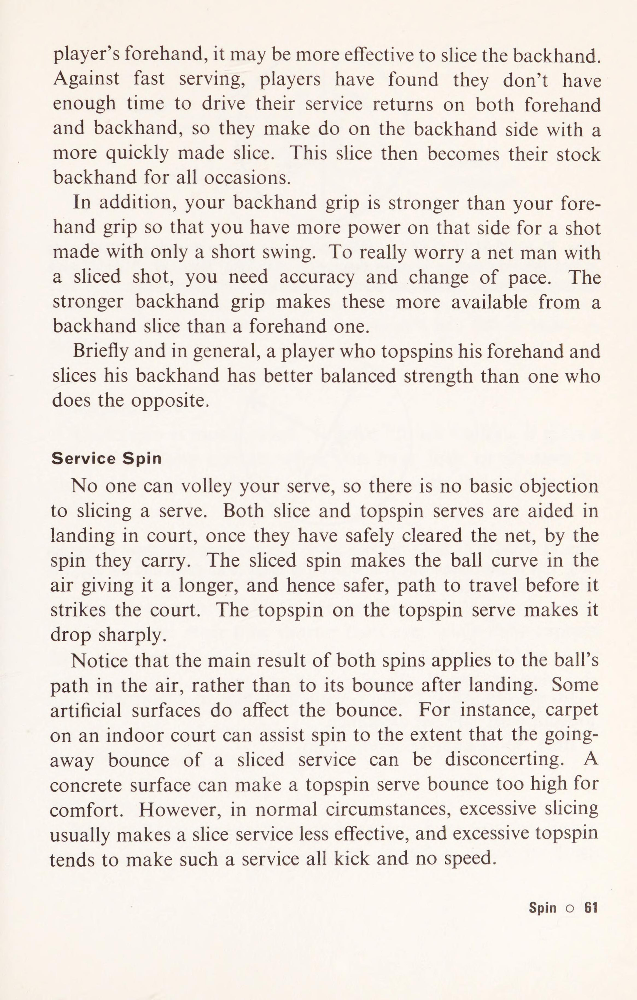
Chương 7: Làm Chủ Khoa Học Xoáy Bóng (Spin Mastery)
Xoáy bóng (Spin) không phải là một thủ thuật làm màu hay biểu diễn; nó là yếu tố cốt lõi quyết định biên độ an toàn (Margin of Safety) của mọi cú đánh đỉnh cao. Có ba loại xoáy căn bản mà người chơi bắt buộc phải thấu hiểu cơ chế khí động học:
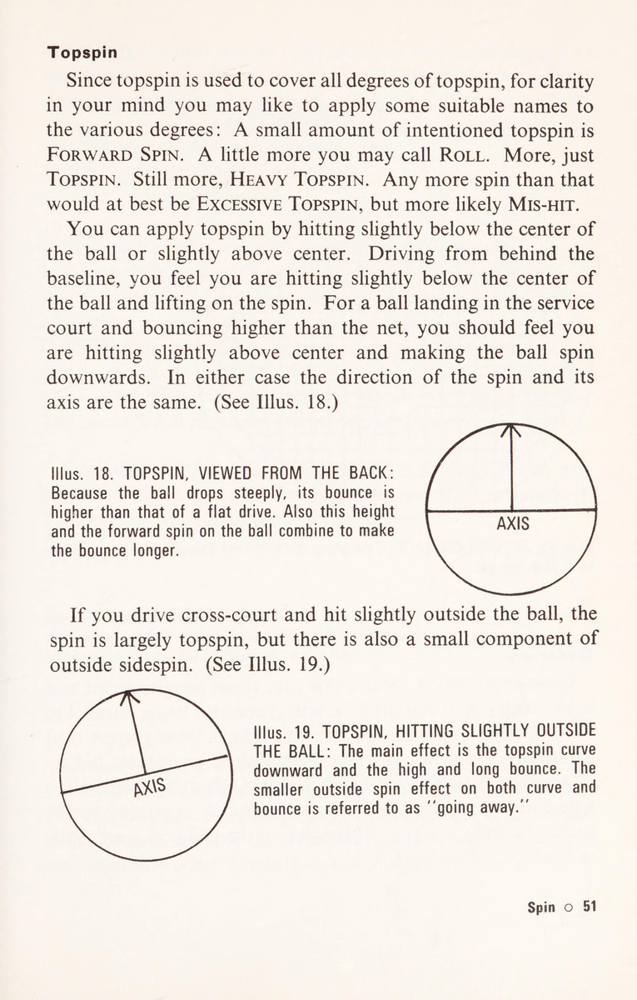
1. Xoáy Cuộn Trên (Topspin) — Vũ Khí Tấn Công Tối Thượng
Khi mặt vợt quét từ dưới lên trên qua mặt sau của quả bóng, quả bóng sẽ quay tròn về phía trước theo chiều bay. Dưới tác động của hiệu ứng Magnus, luồng không khí ở phía trên đỉnh quả bóng di chuyển ngược chiều với chiều quay nên bị hãm lại, tạo ra vùng áp suất cao. Ngược lại, luồng không khí ở đáy quả bóng di chuyển cùng chiều nên vận tốc tăng lên, tạo ra vùng áp suất thấp.
Sự chênh lệch áp suất này sinh ra một lực hút kéo quả bóng cắm thẳng xuống đất nhanh hơn nhiều so với tác động của trọng lực đơn thuần. Nhờ đó, bạn có thể vung vợt với tốc độ tối đa qua mép lưới cao từ 1 đến 1.5 mét mà bóng vẫn rơi gọn gàng bên trong vạch cuối sân đối thủ. Sau khi chạm đất, bóng sẽ nảy vọt về phía trước với góc nảy cao, ép đối thủ phải lùi xa ra sau sân.
2. Xoáy Cắt Dưới (Underspin / Backspin / Slice) — Công Cụ Kiểm Soát Nhịp Độ
Ngược lại với Topspin, cú Slice được thực hiện bằng cách chém vợt từ trên cao xuống thấp và hơi đẩy về phía trước. Chiều quay ngược của quả bóng tạo ra lực nâng khí động học, giúp đường bóng bay bổng lướt là là mặt lưới và duy trì quỹ đạo ngang ổn định.
Sau khi tiếp xúc mặt sân, quả bóng mang xoáy underspin sẽ "trượt" đi (skid) và nảy rất thấp, buộc đối thủ phải chùng chân cúi gập người xuống sát mặt đất để đánh bóng lên. Đây là vũ khí hoàn hảo để phá vỡ nhịp điệu của những tay vợt quen đánh bóng ngang ngực và dùng để phòng thủ kéo dài thời gian phục hồi vị trí.
3. Xoáy Ngang (Sidespin) — Quỹ Đạo Đổi Hướng Ma Quái
Được tạo ra khi quét mặt vợt chéo quanh trục đứng của quả bóng. Sidespin thường được kết hợp trong cú giao bóng Slice Serve hoặc cú cắt bóng ngắn chéo sân (drop shot angle), khiến quả bóng sau khi chạm đất sẽ quẹo hẳn sang một bên, lôi kéo đối thủ văng ra khỏi đường biên hành lang sân đấu.
Chương 8: Vận Hành Lối Chơi & Nghệ Thuật Phán Đoán (Playing Your Game & Anticipation)
Một điểm yếu tâm lý phổ biến của người chơi trung cấp là: họ luôn bị đối thủ điều khiển lối chơi. Khi đối phương đánh nhanh, họ cố đánh nhanh theo; khi đối phương đánh bóng đều, họ trở nên nôn nóng tự đánh hỏng. Họ hoàn toàn không có một bản sắc chiến thuật rõ ràng để làm chỗ dựa trong những thời khắc sinh tử.
Nghệ Thuật Đọc Vị Đối Thủ (The Art of Anticipation):
Những tay vợt hàng đầu thế giới dường như "biết trước" quả bóng sẽ đi về đâu không phải vì họ có giác quan thứ sáu, mà vì họ có khả năng giải mã các tín hiệu chuyển động cơ học (Biomechanical Visual Cues) từ đối thủ trước khi quả bóng rời mặt vợt:
- Quan sát vị trí bàn chân và hông đối thủ: Nếu đối thủ bước chân mở rộng (Open stance) và ngả người ra sau khi đánh bóng tầm thấp, 90% khả năng họ chỉ có thể đánh quả bóng chéo sân (crosscourt) an toàn. Họ hoàn toàn không có cơ sở cơ học để kéo bóng dọc dây (down-the-line) mà không đánh hỏng.
- Quan sát độ cao của đầu vợt khi chuẩn bị: Nếu đầu vợt của đối thủ hạ xuống thấp hơn đầu gối rất sâu, họ chuẩn bị thực hiện cú giật topspin hoặc cú lob cứu bóng. Nếu đầu vợt nâng cao ngang tai, một cú chém slice hoặc cú drop shot chuẩn bị xuất hiện.
- Quan sát vị trí tung bóng khi giao bóng: Nếu bóng được tung lệch nhiều sang bên phải (đối với người thuận tay phải), đó là cú Slice serve xé góc. Nếu bóng được tung thẳng trên đỉnh đầu hoặc hơi lệch sang trái, đó là cú Kick serve cày sâu vào góc chữ T hoặc vào người.
PHẦN 4: CHIẾN THUẬT ĐƠN - ĐÔI & VƯỢT QUA CẠM BẪY TÂM LÝ THI ĐẤU
— Paul Metzler (Tennis Weaknesses & Remedies)
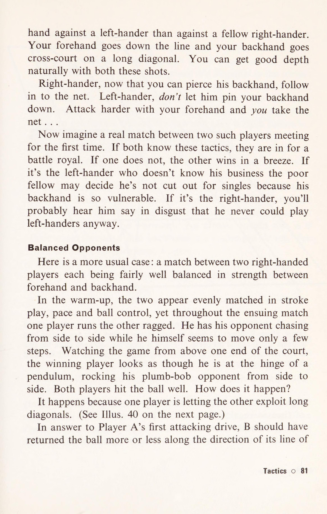
Chương 9: Chiến Thuật Thực Chiến (Tactical Placement)
Điểm yếu chiến thuật lớn nhất của người chơi phong trào là thói quen "đánh bóng về phía không người" (aiming for the empty court) một cách mù quáng ngay cả khi đang đứng ở vị trí bất lợi. Họ thường cố tung ra một cú đánh dọc dây hiểm hóc khi đang bị kéo dãn hết biên độ ở góc sân, và kết quả là 8/10 lần bóng bay rúc vào phần lưới cao ở cột hoặc trượt ra ngoài hành lang.
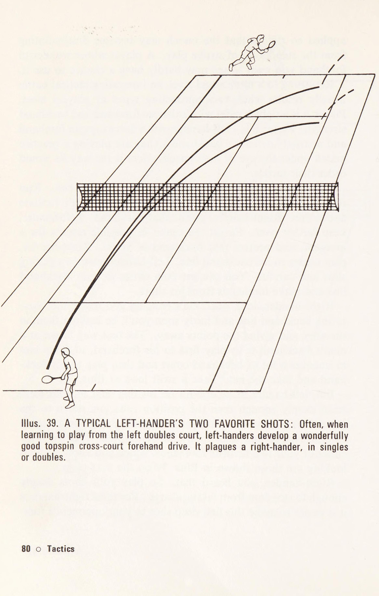
Ba Định Luật Chiến Thuật Bất Biến:
- Định luật Chiều Sâu (The Law of Depth): Một quả bóng rơi sâu cách vạch cuối sân đối thủ trong vòng 1 mét luôn có giá trị chiến thuật cao hơn một cú đánh bóng cực mạnh nhưng rơi ở giữa sân. Bóng sâu ép đối thủ phải lùi xa, triệt tiêu mọi góc tấn công nguy hiểm của họ và cho phép bạn làm chủ thế trận.
- Định luật Đường Chéo Sân (Crosscourt Supremacy): Khoảng cách từ góc sân này sang góc sân kia theo đường chéo dài hơn đường thẳng gần 2 mét (25.1 m so với 23.77 m), và phần giữa lưới thấp hơn hai bên mép cột tới 15 cm. Đánh chéo sân mang lại biên độ an toàn cơ học cao nhất. Chỉ đánh dọc dây khi bạn đã bước chân vào trong sân và nhận được một quả bóng ngắn, nảy ngang tầm thắt lưng.
- Tấn công vào sự chuyển dịch trọng tâm: Đừng chỉ đánh bóng sang góc trống đối diện; hãy đánh bóng ngược lại hướng mà đối thủ vừa xuất phát chạy phục hồi (Behind the opponent). Khi đối thủ đang dồn toàn bộ đà chạy về giữa sân, việc phải phanh gấp và đổi hướng ngược lại sẽ khiến họ bị trượt chân hoặc đánh bóng với tư thế mất thăng bằng hoàn toàn.
Chương 10: Những Ngộ Nhận Trong Thi Đấu Giải (Match Play Fallacies)
Tâm lý thi đấu là chiến trường vô hình nơi hầu hết các trận đấu bị đánh mất trước khi quả bóng cuối cùng chạm đất. Paul Metzler đã tổng kết bốn cạm bẫy tâm lý phổ biến nhất:
- Ngộ nhận "Phải đánh winner để thắng điểm": Thống kê ở mọi cấp độ từ nghiệp dư đến chuyên nghiệp đều chỉ ra rằng: trên 70% các điểm số kết thúc bằng lỗi đánh hỏng (Unforced Errors), không phải bằng cú đánh ghi điểm trực tiếp (Winner). Người chiến thắng là người có khả năng đưa thêm một quả bóng nữa qua lưới sang vị trí hiểm hóc.
- Hội chứng hoảng loạn khi dẫn điểm (Choking when ahead): Khi dẫn trước 5-2 hoặc 40-15, người chơi thường chuyển sang trạng thái sợ thua, rụt tay lại và chỉ dám đẩy bóng cầm chừng. Lối chơi rụt rè này lập tức trao quyền chủ động cho đối thủ vùng lên lội ngược dòng.
- Để một điểm số hỏng phá hỏng cả ván đấu: Quá dằn vặt về một cú smash hỏng hay một quyết định gây tranh cãi của trọng tài khiến bạn đánh mất sự tập trung ở 3-4 điểm tiếp theo. Hãy học cách "reset" bộ não ngay sau khi tiếng bóng kết thúc.
- Thay đổi lối chơi chiến thắng giữa chừng: Khi một chiến thuật đang hoạt động hiệu quả (ví dụ: liên tục ép bóng sâu vào cú trái tay của đối thủ), người chơi lại tự nhiên muốn thử nghiệm những cú đánh mạo hiểm mới lạ và tự phá vỡ đà thăng hoa của chính mình.
Chương 11: Điểm Yếu & Giải Pháp Khắc Phục Trong Đánh Đôi (Doubles Weaknesses & Remedies)
Quần vợt đánh đôi không phải là trò chơi của hai người đánh đơn đứng cùng một bên sân; nó là một môn thể thao hoàn toàn khác biệt về hình học, cự ly và sự phối hợp đồng đội:
1. Căn Bệnh "Người Xem Lưới Thụ Động" (Statue at the Net)
Nhiều người đứng lưới trong đánh đôi chỉ đứng yên như một bức tượng, quay đầu nhìn bóng bay qua lại và chỉ đánh khi bóng bay thẳng vào người mình. Giải pháp là: người đứng lưới phải liên tục di chuyển nhấp nhổm theo quả bóng, thực hiện động tác giả (fake move) và chủ động băng cắt bắt bóng (Poaching) ở khu vực giữa sân ngay khi đối thủ có dấu hiệu đánh bóng lỏng tay.
2. Bảo Vệ Hành Lang (Defending the Alley)
Người đứng lưới thường quá sợ bị đối thủ đánh dọc dây (down the alley) nên đứng nép sát vào vạch biên ngoài cùng. Điều này mở ra một khoảng trống mênh mông ở trung lộ cho đối thủ thoải mái ghi điểm. Hãy nhớ rằng: khoảng cách dọc dây hẹp hơn và có rào cản lưới cao nhất ở cột. Hãy đứng cách vạch biên đôi khoảng 1 mét, sẵn sàng đón lõng trung lộ và chỉ bảo vệ hành lang khi đối thủ bị kéo ra ngoài sân có góc đánh thẳng.
3. Nguyên Lý "Đồng Bộ Di Chuyển Cặp Đôi" (The String Principle)
Hãy tưởng tượng giữa bạn và người đồng đội có một sợi dây thừng căng dài 3 mét nối hai người lại với nhau. Khi người này di chuyển sang phải, người kia phải trượt sang phải theo để duy trì cự ly che chắn; khi người này tiến lên lưới, người kia cũng phải tiến lên theo để thu hẹp khoảng trống. Tuyệt đối tránh tình trạng một người đứng tít dưới đáy sân và một người đứng sát lưới tạo ra khoảng trống mênh mông ở giữa sân cho đối thủ khai thác.